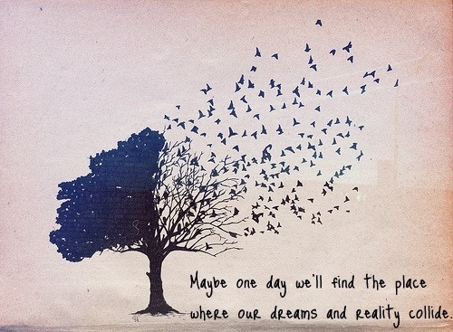

Gatsby came from a lower class familiyin the Midwest
He falls in love in Dasiy before he was called to war. Being just a soldier, he has no money and power
He is not a honest marchant as his money comes from the illegal business with alcohol, yet he is a sincere person and treats his love toward Dasiy as true
There is no doubt that Gatsby's dream is to earn Dasiy's love
Coming from a lower class, his dream suits the orginal defination of the American Dream the most
Yet the reality destroyed his dream curely. Dasiy married Tom during the time of War. The social difference between Gatsby and dasiy is never truely overcome
Gatsby takes on the blame for Dasiy manslaughter and paid his life for it.
His dream is never sucessful and is crashed with the death of himself
The lack of people going to his funeral and the run away of Dasiy and Tom also shows the emptyness of his dream

However, glorious might be his future as Jay Gatsby, he was at present a penniless young man without a past, and at any moment the invisible cloak of his uniform might slip from his shoulders (Fitzgerald 149)
He and this Wolfshiem bought up a lot of side-street drug-stores here and in Chicago and sold grain alcohol over the counter. That's one of his little stunts. I picked him for a bootlegger the first time I saw him, and I wasn't far wrong (Fitzgerald 133)